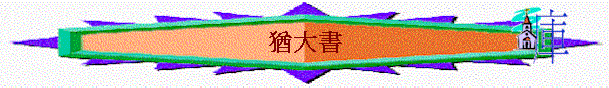

Ⅰ猶大書緒論
一.作者：猶大
猶1:1 耶穌基督的僕人，雅各的弟兄猶大，寫信給那被召、在父 神�婸X愛、為耶穌基督保守的人。
猶1:17 親愛的弟兄啊，你們要記念我們主耶穌基督之使徒從前所說的話。
猶1:18 他們曾對你們說過，末世必有好譏誚的人隨從自己不敬虔的私慾而行。
太13:55 這不是木匠的兒子嗎？他母親不是叫馬利亞嗎？他弟兄們不是叫雅各、約西（有古卷：約瑟）、西門、猶大嗎？
〜在聖經中曾提及三個主要猶大：
＊耶穌的門徒──雅各之子猶大，又稱達太（路6:16）
＊出賣主的猶大(可13:19)
＊主耶穌肉身的兄弟，也是雅各的弟兄猶大
∼而猶大書的作者應是主耶穌肉身的兄弟猶大，因猶1:1說他是雅各的弟兄，雖然路6:16的十二門徒之一的猶大，在原文中也可譯雅各之兄弟猶大，但猶大書作者說要記念主耶穌基督之使徒從前所說的話。他應不是十二使徒，也不可能是已死出賣主的猶大，他應是耶穌肉身的弟弟猶大了
∼他應是主復活後才信主的，他雖是主的兄弟，但他不像一些妄自尊大的人，高舉自己是主的兄弟，反稱呼自己是耶穌基督的僕人
∼他也沒有抬高自己，反要人記念使徒從前所說的話
二.寫作時間
1:17 親愛的弟兄啊，你們要記念我們主耶穌基督之使徒從前所說的話。
∼應是親自聽過使徒話那代信徒的時代
∼可能在主前67-68年
三.寫作對象
1:1 耶穌基督的僕人，雅各的弟兄猶大，寫信給那被召、在父 神�婸X愛、為耶穌基督保守的人。
1.沒有註明是那一地方的人
2.被召在主內的人
3.也是寫給教會的，因有偷著進來的人
四.寫書原因
1.教會出現內部危機
1:4 因為有些人偷著進來，就是自古被定受刑罰的，是不虔誠的，將我們 神的恩變作放縱情慾的機會，並且不認獨一的主宰─我們（或譯：和我們）主耶穌基督。
1:12 這樣的人在你們的愛席上與你們同吃的時候，正是礁石（或譯：玷污）。他們作牧人，只知餵養自己，無所懼怕；是沒有雨的雲彩，被風飄蕩；是秋天沒有果子的樹，死而又死，連根被拔出來；
1:16 這些人是私下議論，常發怨言的，隨從自己的情慾而行，口中說誇大的話，為得便宜諂媚人。
1:19 這就是那些引人結黨、屬乎血氣、沒有聖靈的人。
A.有假師傅混入教會
a.偷著進來：原文有秘密地進入, 偷偷摸摸地溜入
b.不是信主：因不認獨一的主宰
c.不虔誠的
d.放縱情慾
e.屬乎血氣
f.作牧羊人
g.令人受損
h.引人結黨
i.從中得益
B.有信徒似乎被誘而離開信仰
1:23 有些人你們要從火中搶出來，搭救他們；有些人你們要存懼怕的心憐憫他們，連那被情慾沾染的衣服也當厭惡。
2.勸勉信徒捍衛信仰
1:3 親愛的弟兄啊，我想盡心寫信給你們，論我們同得救恩的時候，就不得不寫信勸你們，要為從前一次交付聖徒的真道竭力地爭辯。
∼真道直譯是信心或信仰，竭力地爭辯有奮鬥，對抗及捍衛的意思
∼面對假信徒及假師傅，教會所要的是竭力地捍衛信仰
3.勸勉信徒不效他們
1:19 這就是那些引人結黨、屬乎血氣、沒有聖靈的人。
1:20 親愛的弟兄啊，你們卻要在至聖的真道上造就自己，在聖靈�媄咩i，
∼有些人是不敬虔及屬乎血氣的，但信徒卻不可效法，要追求屬乎真理正確的路
五.本書字眼
1.保守
1:1 耶穌基督的僕人，雅各的弟兄猶大，寫信給那被召、在父 神�婸X愛、為耶穌基督保守的人。
1:6 又有不守本位、離開自己住處的天使，主用鎖鍊把他們永遠拘留在黑暗�堙A等候大日的審判。
1:21 保守自己常在 神的愛中，仰望我們主耶穌基督的憐憫，直到永生。
1:24 那能保守你們不失腳、叫你們無瑕無疵、歡歡喜喜站在他榮耀之前的我們的救主─獨一的 神，
∼本書有很多保守字眼，原文tereo有看守、守衛、持守及不丟失的意思，今日信徒要守著及守衛什麼？
A.捍衛真道及信仰
B.保守在神的愛中
C.不離開自己本位
D.對神保守有信心
2.不敬虔
1:4 因為有些人偷著進來，就是自古被定受刑罰的，是不虔誠的，將我們 神的恩變作放縱情慾的機會，並且不認獨一的主宰─我們（或譯：和我們）主耶穌基督。
1:15 要在眾人身上行審判，證實那一切不敬虔的人所妄行一切不敬虔的事，又證實不敬虔之罪人所說頂撞他的剛愎話。
1:18 他們曾對你們說過，末世必有好譏誚的人隨從自己不敬虔的私慾而行。
∼本書也有很多不虔誠、不敬虔等未眼，有什麼含意
A.沒有神
∼有‘ungodly, ungodliness’ 的意思，沒有神，不屬神
B.不敬神
∼也有不敬畏神之意
C.縱私慾
∼此字也有邪惡意思，事實上本書將放縱情慾與不敬虔的人放在一起，事實上，不敬神的人也有放縱情慾及邪惡的行為
D.喜妄行
∼妄行就是有‘ungodly’的意思
3.審判
1:4 因為有些人偷著進來，就是自古被定受刑罰的，是不虔誠的，將我們 神的恩變作放縱情慾的機會，並且不認獨一的主宰─我們（或譯：和我們）主耶穌基督。
1:6 又有不守本位、離開自己住處的天使，主用鎖鍊把他們永遠拘留在黑暗�堙A等候大日的審判。
1:7 又如所多瑪、蛾摩拉和周圍城邑的人，也照他們一味地行淫，隨從逆性的情慾，就受永火的刑罰，作為鑑戒。
1:15 要在眾人身上行審判，證實那一切不敬虔的人所妄行一切不敬虔的事，又證實不敬虔之罪人所說頂撞他的剛愎話。
∼本書也有很多審判及刑罰字眼，對什麼人作審判？
A.對不守本位的天使作審判
B.對一味行淫的所多瑪、蛾摩拉作審判
C.對不敬虔的人作審判
∼他們遭遇的審判，成為信徒的鑑戒
六.本書主題與大綱
保守信仰
引言 (1:1-2)
1.保守的逼切 (1:3)
2.保守的原因 (1:4-16)
3.保守的方法 (1:17-23)
結語 (1:24-25)
七.特色:
1.用很多大自然的比喻
1:12 這樣的人在你們的愛席上與你們同吃的時候，正是礁石（或譯：玷污）。他們作牧人，只知餵養自己，無所懼怕；是沒有雨的雲彩，被風飄蕩；是秋天沒有果子的樹，死而又死，連根被拔出來；
1:13 是海�堛漕g浪，湧出自己可恥的沫子來；是流蕩的星，有墨黑的幽暗為他們永遠存留。
2.喜歡用三連句
1:1 耶穌基督的僕人，雅各的弟兄猶大，寫信給那被召、在父 神��蒙愛、為耶穌基督保守的人。
1:8 這些做夢的人也像他們污穢身體，輕慢主治的，毀謗在尊位的。
如：被召…蒙愛…保守
污穢身體，輕慢主治的，毀謗在尊位的
3.引用很多經典
A.引用舊約:摩西、該隱、可拉、所多瑪、巴蘭、以諾
B.引用新約:耶穌、雅各、使徒的教訓
C.引用其它次經:
1:9 天使長米迦勒為摩西的屍首與魔鬼爭辯的時候，尚且不敢用毀謗的話罪責他，只說：「主責備你吧！」
∼本節所載之事，引自「摩西被提記」，是一法利賽人寫於主後7至30年間，內容多為猶太人所熟悉的軼事，其真實性可疑。本書在此引用這個傳說，目的並非在證實此傳說的可靠性，而是在利用眾所週知的典故，說明人不可狂妄自大。《黃迦勒:基督徒文摘解經系列──猶大書註解》
1:14 亞當的七世孫以諾，曾預言這些人說：「看哪，主帶著他的千萬聖者降臨，
1:15 要在眾人身上行審判，證實那一切不敬虔的人所妄行一切不敬虔的事，又證實不敬虔之罪人所說頂撞他的剛愎話。」
∼1:14-15應是源自猶太人的書--以諾書，此書非舊約聖經，是由一群法利賽人，收集一些片斷殘篇，成書於主前163至63年間，內容分最後的審判、比喻、天文、洪水、勸勉和咒詛等五卷，提供當時猶太人的思想歷史和變化等資料。此處引用它，目的也非在證實該書的正統性，乃在藉它表明將來審判的真實性。《黃迦勒:基督徒文摘解經系列──猶大書註解》
Ⅱ 猶大書內容
主題：保守信仰
引言 (1:1-2)
1:1 耶穌基督的僕人，雅各的弟兄猶大，寫信給那被召、在父 神�婸X愛、為耶穌基督保守的人。
1.介紹
A.基督的僕人
∼猶大沒有像假師傅的高舉自己，他只是耶穌基督的僕人
B.雅各的弟兄
太13:55 這不是木匠的兒子嗎？他母親不是叫馬利亞嗎？他弟兄們不是叫雅各、約西（有古卷：約瑟）、西門、猶大嗎？
加1:19 至於別的使徒，除了主的兄弟雅各，我都沒有看見。
加2:9 又知道所賜給我的恩典，那稱為教會柱石的雅各、磯法、約翰，就向我和巴拿巴用右手行相交之禮，叫我們往外邦人那�堨h，他們往受割禮的人那�堨h。
∼耶穌在肉身上只少有四位弟弟：雅各、約西（有古卷：約瑟）、西門、猶大，而雅各是當時教會的柱石，他的兄弟是猶大，也是本書的作者
∼當時可能有很多假先知，作者要其他教會知他不是假信徒，是雅各的弟兄，有教會柱石為薦的
2.對象
∼是一封公開的書函，沒特定寫給那間教會，但寫給的對象有以下共通地方：
A.被召
∼是神所召，是從世界中召出來的
B.在父 神�婸X愛
∼是神所愛的，我們也當時常仰望祂的愛及常在祂的愛中
C.為耶穌基督保守的人
∼原文tereo有看守、守衛、持守及不丟失的意思，本書一開始已強調信徒是主保守的，即或有危機及引惑，但信徒仍是在主保守中
3.祝願
1:2 願憐恤、平安、慈愛多多的加給你們。
∼信徒在末世危機中，最需要的是什麼呢？
A.神的憐憫—作者在最後也要信徒仰望神的憐憫，即或自己或身邊的肢體被誘惑，我們仍可仰望神的憐憫
B.神的平安—可以保守我們的心懷意念
C.神的慈愛—我們要保守自己常在神的愛中
∼多多的－有加倍的意思，既然神的憐憫、平安、慈愛，這樣重要，猶大願這些也從神多多加倍的給信徒
一.保守的逼切 (1:3)
1:3 親愛的弟兄啊，我想盡心寫信給你們，論我們同得救恩的時候，就不得不寫信勸你們，要為從前一次交付聖徒的真道竭力的爭辯。
1.逼切的語氣
∼盡心寫信、得不寫信、竭力地爭辯也是逼切的字眼
2.逼切的重點
A.同得的救恩
∼昔日大家一同有的救恩，是一樣沒分別的，但現有不同的救恩（假的）出現
B.從前一次交付的信仰
∼真道即所信的，從前神的僕人一次交付的信仰，是一次的，沒有多次，沒有再更改的，但現在出現更改的危機
C.竭力的爭辯
∼竭力的爭辯直譯拚命奮鬥、鬥爭、競爭意思，信徒當為不變的信仰竭力的爭辯
二.保守的原因 (1:4-16)
1.混入的事實
1:4 因為有些人偷著進來，就是自古被定受刑罰的，是不虔誠的，將我們 神的恩變作放縱情慾的機會，並且不認獨一的主宰─我們（或譯：和我們）主耶穌基督
∼「因為」即為何信徒要竭力的為信仰爭辯，因為以下原因：
A.不只一個：有些人即不只一個
B.偷著進來：有秘密地進入及偷偷摸摸地溜入意思
C.自古受刑：證明這些人是神不喜歡的，也不是真正得永生的人
D.不虔誠的：UNGODLY，對神不敬，沒神的人
E.放縱情慾：神原給人自由的恩典，他們卻濫用神的自由，行邪淫放縱的事
F.不認主宰：耶穌是我們獨一的主人，但他們卻不認祂為唯一的主
2.歷史的鑑戒
1:7 又如所多瑪、蛾摩拉和周圍城邑的人，也照他們一味地行淫，隨從逆性的情慾，就受永火的刑罰，作為鑑戒。
∼1:7「作為鑑戒」即以上的歷史成為信徒的鑑戒，不要跟從不敬虔人的樣式
A.不信的以色列人
猶1:5 從前主救了他的百姓出埃及地，後來就把那些不信的滅絕了。這一切的事，你們雖然都知道，我卻仍要提醒你們。
林前10:1 弟兄們，我不願意你們不曉得，我們的祖宗從前都在雲下，都從海中經過，
林前10:5 但他們中間多半是 神不喜歡的人，所以在曠野倒斃。
林前10:11 他們遭遇這些事都要作為鑑戒，並且寫在經上，正是警戒我們這末世的人。
∼從前神救了他的百姓出埃及地，但他們不信神的應許與能力，常發怨言試探神，神就將他們大部份成年的男丁未絕在曠野中
B.不守本位的天使
猶1:6 又有不守本位、離開自己住處的天使，主用鎖鍊把他們永遠拘留在黑暗�堙A等候大日的審判。
賽14:12-14 明亮之星，早晨之子啊，你何竟從天墜落？你這攻敗列國的何竟被砍倒在地上？你心裡曾說：我要升到天上；我要高舉我的寶座在神眾星以上；我要坐在聚會的山上，在北方的極處。我要升到高雲之上；我要與至上者同等。我要升到高雲之上；我要與至上者同等。
結28:1 耶和華的話又臨到我說： 「人子啊，你對推羅君王說，主耶和華如此說：因你心裡高傲，說：我是神；我在海中坐神之位。你雖然居心自比神，也不過是人，並不是神！
啟12:8-9 並沒有得勝，天上再沒有他們的地方。大龍就是那古蛇，名叫魔鬼，又叫撒但，是迷惑普天下的。他被摔在地上，他的使者也一同被摔下去。
啟20:1-3 我又看見一位天使從天降下，手裡拿著無底坑的鑰匙和一條大鍊子。他捉住那龍，就是古蛇，又叫魔鬼，也叫撒但，把他捆綁一千年，扔在無底坑裡，將無底坑關閉，用印封上，使他不得再迷惑列國。等到那一千年完了，以後必須暫時釋放他。
啟20:9-10 他們上來遍滿了全地，圍住聖徒的營與蒙愛的城，就有火從天降下，燒滅了他們。那迷惑他們的魔鬼被扔在硫磺的火湖裡，就是獸和假先知所在的地方。他們必晝夜受痛苦，直到永永遠遠。
∼魔鬼原來是天使長。因牠不守本位，想與神同等位置，不甘心成為服役的使者，神將祂驅逐到空中，成了魔鬼，而撒但有牠的差役(叛悖的天使)也跟隨了牠
∼主用鎖鍊把他們永遠拘留在黑暗�堙A等候大日的審判。而啟20描述魔鬼會先在無底坑關閉，等候末日的大審判，到將來，會被扔在硫磺的火湖裡！
C.行淫的城國
猶1:7 又如所多瑪、蛾摩拉和周圍城邑的人，也照他們一味的行淫，隨從逆性的情慾，就受永火的刑罰，作為鑑戒。
彼後2:6 又判定所多瑪、蛾摩拉，將二城傾覆，焚燒成灰，作為後世不敬虔人的鑑戒；
∼一味的行淫有生活方式已是行淫意思，而逆性的有另外，不同的，應指二城滿有同性戀逆性的罪行
∼其他周圍城邑的人也受所多瑪、蛾摩拉敗行的影響，行淫亂的事，神用永火刑罰他們
∼這些被造之物的特質也是不敬虔，也受神刑罰，成為今天信徒的鑑戒
3.不敬的特質
A.用被罰之物的類比突顯他們的敗壞
1:8 這些作夢的人也像他們污穢身體，輕慢主治的，毀謗在尊位的。
∼這些作夢的人指前文提及混入教會的不虔人，他們是作夢的人，以為前景光明，卻是作夢的，夢醒後要受至終刑罰
∼也像他們即混入教會的不虔人也像前文提及的以色列人、不守本位的天使、所多瑪、蛾摩拉人一樣有以下的敗壞
a.污穢身體
∼所多瑪、蛾摩拉人一味的行淫，他們也一樣，放縱肉體，以致玷污自己的身體
b.輕慢主治
∼輕慢有忽視及棄絕意思，主治是在高位的人，天使輕慢主治的神，忽視及棄絕祂的管治，將自己等同於神，不敬的人也一樣，不服權柄，不以基督為主人
c.毀謗尊位
∼出埃及的以色列人，他們常埋怨神，毀謗神的僕人，而魔鬼這個名字的意思是「毀謗者」，不敬的人也常發怨言，毀謗在尊位的
B.用與米迦勒的比較突顯他們的傲慢
1:9 天使長米迦勒為摩西的屍首與魔鬼爭辯的時候，尚且不敢用毀謗的話罪責他，只說：「主責備你吧！」
1:10 但這些人毀謗他們所不知道的。他們本性所知道的事與那沒有靈性的畜類一樣，在這事上竟敗壞了自己。
申34:5 於是，耶和華的僕人摩西死在摩押地，正如耶和華所說的。
申34:6 耶和華將他埋葬在摩押地、伯•毗珥對面的谷中，只是到今日沒有人知道他的墳墓。
但10:13 但波斯國的魔君攔阻我二十一日。忽然有大君（就是天使長；二十一節同）中的一位米迦勒來幫助我，我就停留在波斯諸王那�堙C
∼1:9引自「摩西被提記」的內容
∼耶和華曾將摩西埋葬在摩押地，沒人知他的墳墓在那裡，神可能知道人若知道摩西的屍首在那裡時，會高舉他的身體，成為他們心中的偶像
∼魔鬼可能也想利用摩西的屍首作牠的工，所以出現天使長米迦勒為摩西的屍首與魔鬼爭辯的情況
∼天使長米迦勒在天使中的位份是最大的，但面對曾經也是天使長的魔鬼，米迦勒也尊重未墜落前天使的主人──神，不敢用毀謗的話罪責他，只說：「主責備你吧！」米迦勒將責備的權柄交給真正的主人──神中！
∼但不敬的人卻毀謗他們所不知道的，他們不知道毀謗的人或屬靈的事中有偉大的神在上的，他們傲慢一切，心中沒神，如畜類一樣，沒經理性，就行本性想行的事，不敬的人也沒理性的，不知道自己毀謗什麼！正不斷敗壞自己！
C.用過往人物行錯路突顯他們的歪路
1:11 他們有禍了！因為走了該隱的道路，又為利往巴蘭的錯謬�堛蔗b，並在可拉的背叛中滅亡了。
a.該隱的道路
∼該隱本是奉獻的人，自以為獻祭給神，行了宗教的事，神必悅納，但至終神不悅納他的祭物，因他心中存罪，行得不好，不敬的人一樣，他們自以為作了很多宗教的事，但至終神不悅納他們，因他們充滿罪行！他們行錯了路！
b.巴蘭的錯謬
彼後2:15 他們離棄正路，就走差了，隨從比珥之子巴蘭的路。巴蘭就是那貪愛不義之工價的先知，
∼巴蘭本是先知，但他行了錯路，為不義之工價想咒詛神的選民，不敬的人為自己的利益事奉，也是行錯謬的路
c.可拉的背叛
∼可拉和他的跟從者本是事奉的人，但他們不滿足自己的位份，常背叛神的僕人摩西，結果地開口吞滅他們，他們想自高身份，行錯了事奉者的路，不敬虔的人也常抬高自己，不服神所立權柄的人，也行了可拉的背叛之路，最終引向滅亡！
D.用自然景象的比喻突顯他們的本相
1:12 這樣的人在你們的愛席上與你們同吃的時候，正是礁石（或譯：玷污）。他們作牧人，只知餵養自己，無所懼怕；是沒有雨的雲彩，被風飄蕩；是秋天沒有果子的樹，死而又死，連根被拔出來；
1:13 是海�堛漕g浪，湧出自己可恥的沫子來；是流蕩的星，有墨黑的幽暗為他們永遠存留。
a.礁石
∼不敬的人會與信徒一同吃飯，用信徒的愛親近信徒，他們也像牧人牧養人信徒，但他們是假師傅，真正的本相是礁石，不但幫不到人，卻使人有損，他們也無所懼怕如礁石在大海中，只知餵養自己，而卻令信徒受玷污（礁石或譯：玷污）
b.沒有雨的雲彩
∼指其有名無實，沒帶來雨水滋潤大地，被風飄蕩，指沒有真理立場，受異教之風吹動，飄來飄去
c.秋天沒有果子的樹
∼原本似乎有果效的果樹至終終沒有益處，秋天指採收果子的季節，但樹卻沒有果子結果沒用，最終下場是枯死或被砍下
d.海�堛漕g浪
∼海�堛漕g浪表面似乎給人有能力的感覺，再仔細留意，卻發現原來海�堛漕g浪是將海底最污穢的物湧出水面
e.流蕩的星
∼星本來有照明作用，但流蕩的星一閃即逝，至終消失漆黑宇宙中！
4.至終的結局
1:14 亞當的七世孫以諾，曾預言這些人說：「看哪，主帶著他的千萬聖者降臨，
1:15 要在眾人身上行審判，證實那一切不敬虔的人所妄行一切不敬虔的事，又證實不敬虔之罪人所說頂撞他的剛愎話。
1:16 這些人是私下議論，常發怨言的，隨從自己的情慾而行，口中說誇大的話，為得便宜諂媚人。
A.主降臨
∼1:14-15應是源自猶太人的書--以諾書，他曾預言主會帶千萬聖者降臨，而聖者包括已被提及復活的信徒及千千萬萬的天使
B.行審判
∼要在眾人身上行審判，指向一切不敬虔的人
C.證惡行
∼不敬虔的人罪行在那裡？
a.妄行一切不敬虔事
∼妄行即ungodly，有邪惡，不敬的意思，他們愛隨從私慾而行敗壞的事
b.愛說得罪神的言語
(1)頂撞的話
∼頂撞有對著、反對、抵擋意思，剛愎有硬心的意思，他們說了什麼不好的話
(2)怨言的話
∼私下議論有愛發牢騷的人意思，常發怨言的
(3)誇大的話
∼為了討好人，為了得人利益，愛說虛慌誇大的話
三.保守的方法 (1:17-23)
1.使徒預言的記念
1:17 親愛的弟兄啊，你們要記念我們主耶穌基督之使徒從前所說的話。
1:18 他們曾對你們說過，末世必有好譏誚的人隨從自己不敬虔的私慾而行。
1:19 這就是那些引人結黨、屬乎血氣、沒有聖靈的人。
∼主耶穌基督之使徒一早已說明末世必有以上不敬虔的人出現，他們的特質是
A.專好譏誚：愛嘲弄人
B.隨從私慾
C.引人結黨
D.屬乎血氣：血氣即沒有靈性意思
2.分別為聖的追求
1:20 親愛的弟兄啊，你們卻要在至聖的真道上造就自己，在聖靈�媄咩i，
1:21 保守自己常在 神的愛中，仰望我們主耶穌基督的憐憫，直到永生。
「親愛的弟兄啊，你們卻要」表明是有分別的，末世不虔的人，他們走不敬虔沒靈性的路，信徒卻分別出來，有所不同
A.在至聖的真道上造就自己vs隨從私慾
∼真道直譯信心或信仰，不敬的人會追求污穢的情慾，信徒卻要在聖潔的信仰上建立自己
B.在聖靈�媄咩ivs專好譏誚, 屬乎血氣
∼不敬的人愛說無益的言語，屬乎血氣，信徒卻要將言語放在禱告中，聖靈會教我們當怎樣祈禱，我們也按聖靈的意思祈禱
C.保守自己常在 神的愛中vs不守本位,離開神
∼有天使不守本位及離開神，屬神的人卻要守住自己在神的愛中，神的愛是我們最好的保護
D.仰望我們主耶穌基督的憐憫vs輕慢主治
∼不敬的人輕慢主治，我們卻要一生不靠自己，仰望我們主耶穌基督的憐憫，直到永遠
3.憐憫之心的挽回
1:22 有些人存疑心，你們要憐憫他們；
1:23 有些人你們要從火中搶出來，搭救他們；有些人你們要存懼怕的心憐憫他們，連那被情慾沾染的衣服也當厭惡。
∼有些人可能被引誘離開了真道，我們可以怎樣做？
A.憐憫他們：用神的憐憫愛他們，期望他們回轉
B.搶救他們：有逼切的心，他們在假師傅手中，我們要從火中搶出來，搭救他們
C.也當小心：因他們可能已被情慾沾染了，我們在憐憫過程中，也要小心，敬重神，小心沾染了他們的不潔，受他們影響，「連那被情慾沾染的衣服也當厭惡」表明我們對罪及不潔是敏感的，對情慾的事要厭惡
結語 (1:24-25)
1:25 願榮耀、威嚴、能力、權柄，因我們的主耶穌基督歸與他，從萬古以前並現今，直到永永遠遠。阿們！
1.強調神的保守
1:24 那能保守你們不失腳、叫你們無瑕無疵、歡歡喜喜站在他榮耀之前的我們的救主─獨一的 神，
∼在末世時，雖有假師傅出現，也有信徒被迷惑而離開，但獨一的神仍能保守信徒不失腳，沒有瑕疵，歡歡喜喜來到神前
2.強調神的尊榮
1:25 願榮耀、威嚴、能力、權柄，因我們的主耶穌基督歸與他，從萬古以前並現今，直到永永遠遠。阿們！
∼假師傅及背叛的天使踵妄自尊大，輕慢神，但猶大也深信及深願永遠的神，因基督所作的工作，得著至高的威榮、能力、權柄的！